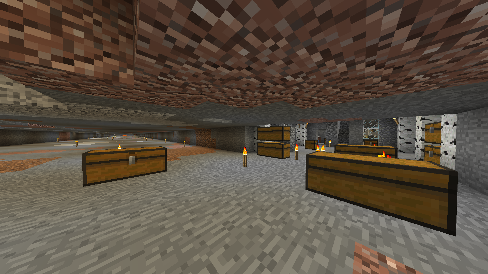

Manfred

Manfred var serverns tredje medlem, efter Jacob och Felix. Han hade håltimma samtidigt som Jacob och Felix men inget eget minecraftkonto. Han lyckades tillslut hitta en crackad version av spelet. Manfred började bygga sitt hus under marken, men när servern flyttades från Jacobs skoldator till en dedikerad server hamnade huset länge inom spawnchunksen som var protectade i server.properties. Därför kunde han inte fortsätta med bygget förrän Jacob rättade till misstaget långt senare. Manfreds grotta
Manfred har byggt många småaffärer omkring sitt låsta hus. Mer info om dessa finns under affärsfliken.
Manfred håller på med ett stort projekt i Nether där han bygger än stor witherfarm i samarbete med Karl. Till detta projekt behöver han mängder med sten och har däför byggt en helautomatisk cobblestonegenerator. Stenen craftar han till slabs som han täcker golvet med för att blocka spawns runt om fortresset.